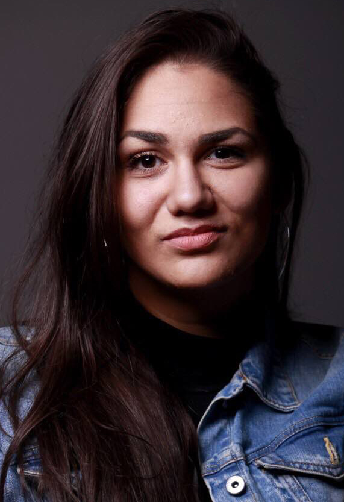

Osnivač i umetnički direktor ART STUDIO VANJA

"Umetnost je most između unutrašnjeg sveta i univerzalnih ljudskih iskustava. Kroz nju istražujemo identitet, kulturu i društvene margine."
Vanja Ignjac Đukić predstavlja jedan od autentičnih i snažnih glasova savremene vizuelne umetnosti, umeticu čiji je rad prepoznat i vrednovan kako u Srbiji, tako i na međunarodnoj sceni. Njeno stvaralaštvo odlikuje izuzetna posvećenost, kontinuitet i jasno izgrađena umetnička pozicija, koja je tokom godina prerasla u prepoznatljiv i relevantan autorski izraz.
Kao multimedialna umetnica, ona suvereno vlada različitim vizuelnim disciplinama – od grafike, crteža i slikarstva do fotografije – koristeći ih kao ravnopravna sredstva za izgradnju kompleksnog i slojevi tog vizuelnog jezika. Njen rad prevazilazi okvire klasičnog medijskog izražavanja, ulazeći u prostor savremene umetničke misli u kojem se lična poetika preplitće sa univerzalnim temama identiteta, žene, kulturnog nasleđa i društvenih margina.
Posebnu snagu njenom umetničkom izrazu daje i rad sa decom, koji zauzima važno mesto u njenom stvaralačkom i pedagoškom delovanju. Polazeći od uverenja da deca stvaraju najčistiju i najiskreniju umetnost, ona kroz edukativne i umetničke procese ne samo da prenosi znanje, već i aktivno uči, preispituje i obnavlja sopstveni umetnički jezik. Taj dijalog između spontanosti dečjeg izraza i zrele autorske svesti čini poseban sloj njenog rada.
Posebnu težinu njenom umetničkom putu daje kontinuirana međunarodna aktivnost, kroz koju njen rad ostvaruje vidljivost i dijalog sa različitim kulturnim kontekstima. Izlaganja i učešća u projektima i izložbama širom sveta pozicionirala su Vanju Ignjac Đukić kao umetnicu koja ne samo da predstavlja savremenu srpsku umetnost, već je i aktivno oblikuje u širem, globalnom okviru.
Međutim, njena uloga ne završava se u okviru sopstvenog stvaralaštva. Kao osnivačica i nosilac umetničkih inicijativa, ona snažno deluje na polju kulture, razvijajući projekte koji povezuju umetnost, zajednicu i društveni angažman. Kroz rad udruženja koje vodi, podiže vizuelnu umetnost na viši nivo, otvarajući prostor za nove generacije umetnika, interkuturalni dijalog i inkluzivne umetničke prakse.
Njena doslednost, profesionalna zrelost i umetnička hrabrost izdvajaju je kao autorku čiji rad nosi težinu i trajnost. Vanja Ignjac Đukić danas stoji kao umetnica koja je svojim delovanjem izgradila jasnu poziciju ne samo kao priznata umetnica u Srbiji, već i kao relevantan i prepoznat glas savremene umetnosti na međunarodnoj sceni.
Vanja je svoje radove izlagala širom sveta, dijalogirajući sa savremenom umetničkom scenom na 5 kontinenata
Univerzitet u Novom Sadu dodeljuje nagradu za vrhunske rezultate postignute na evropskim i svetskim takmičenjima
Godišnja nagrada Akademije umetnosti u Novom Sadu za najuspešniji umetnički rad na katedri grafike u generaciji 2013/17
Arhiv Vojvodine, Novi Sad
Arhiv Vojvodine, Novi Sad
Arhiv Vojvodine, Novi Sad
Mali likovni salon, Novi Sad
Arhiv Vojvodine, Novi Sad
Galerija kulturnog centra, Vrbas
Arhiv Vojvodine, Novi Sad
Galerija Stepenište, Beograd
Galerija SKC Novi Beograd, Novi Beograd
Galerija Narodnog muzeja Vranje, Vranje
Vafopulio Kulturni centar Soluna, Solun, Grčka 🇬🇷
Likovni salon Kulturni centar Novi Sad, Novi Sad
Kulturni centar UDAS, Banja Luka, Bosna i Hercegovina 🇧🇦
Galerija Kuće Vojnovića, Inđija
Galerija Hol Akademija umetnosti, Novi Sad
Galerija SULUV, Novi Sad
Galerija Hol Akademija umetnosti, Novi Sad
Mali likovni salon, Novi Sad
Kulturni centar Stare Pazove, Stara Pazova
Poklon zbirka Rajka Mamuzića, Novi Sad
🇧🇬 Varna, Bugarska
🇲🇰 Bogdanci, Makedonija
3. međunarodni projekat grafičke interakcije autentičnog otiska i tiraža
🇦🇷 Argentina • 🇧🇪 Belgija • 🇨🇦 Kanada • 🇩🇰 Danska • 🇪🇸 Španija • 🇫🇷 Francuska • 🇲🇽 Meksiko • 🇹🇼 Tajvan • 🇺🇸 Kalifornija
🇬🇷 Vafopulio Kulturni centar Soluna, Grčka
Akademija umetnosti u Novom Sadu
Galerija ULUS, Beograd
Kulturna stanica Svilara, Novi Sad
Zbirka strane umetnosti Muzej grada Novog Sada, Novi Sad
Galerija Hol Akademija umetnosti, Novi Sad
Grafički Kolektiv, Beograd
Galerija Suluv, Novi Sad
Galerija La Vista, Novi Sad
Kulturni centar Inđije, Inđija
Fabrika umetnička galerija, Novi Sad
Kulturni centar Magacin, Beograd
NOA, Ejdšeg, Novi Sad
Galerija FLU, Beograd
Arheološki lokalitet Carska palata Sirmijuma, Sremska Mitrovica
Fabrika umetnička galerija, Novi Sad
Dom kulture „Studentski grad", Beograd